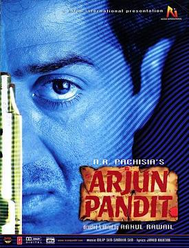

Vikas Dubey Arrested Dramatically from Mahakaleshwar Jyotirlinga Temple
Gangster turned politician of Uttar Pradesh, Vikas Dubey (alias Vikas Pandit) was arrested dramatically on the premises of Mahakaleshwar Jyotirlinga Temple (Ujjain ) by Madhya Pradesh Police early this morning.Vikas Dubey, a well known criminal absconded from Dicru Village of Choubepur Block of Kanpur Dehat, after attacking the police team who was going to arrest him from his village in the night of 2nd July, 2020.Eight policemen including DSP were brutally killed in this encounter.He was later declared absconder and a bounty of rupees 5 lakh was kept on his name.
He was seen near a hotel at Faridabad with the help of CCTV footage.From there he fled in an auto.After the incident he spent 4 days in Kanpur and from there traveled more than 1,200 kilometers to reach Ujjain by giving the slip to police teams at different locations.
At the time of his arrest he was seen moving in the premises of Maha Kal Temple in suspicious conditions.He was chased at length by two guards deputed by the temple authority; and thereafter was questioned about his identity.As the given ID mismatched from his personality Vikas was taken to a local police station.After completing the formalities, he will be handed over to UP police for proceedings.
Dubey is a resident of village Bikaru, Chaubepur block, Uttar Pradesh.During his youth, he formed his own gang and was responsible for numerous criminal activities, including murder and land grabbing.The first case against him was lodged in the year 1990 for a murder.Soon, he became one of the most wanted criminals in Kanpur and by 2020 he had over 60 criminal cases against his name.
Also, in 2001 he killed BJP Leader state minister Santosh Shukla at the Shivli police station by gunning him down in the presence of local and police personnel.He was previously arrested too but was later acquitted due to alleged political pressure.
To keep safe himself, Vikas has solid links with local police and politicians in UP and other states.He was the associate of BJP politician Hari kishan Srivastava, who was earlier part of BSP.Vikas himself joined the BSP in 1995-96 and won elections at the district level, by allegedly employing force.His wife, Richa Dubey is also a local politician.She has also won elections to local bodies.
He inspired the character Arjun Pandit played by Bollywood actor Sunny Deval in a 1999 film and thereafter began calling himself Vikas Pandit.He is known to be alternatively referred to by this name or simply as Pandit.
This dramatic arrest has led to a political war.Congress Party General Secretary Sonia Gandhi wants a CBI probe into arrest of Vikas Pandey alias Vikas Pandit.Similarly, Samajwadi Party chief Akhilesh Yadav asked the government whether it was an arrest or surrender.He has demanded that the gangster’s call records be made public so that those connected to him will be exposed.
[bsa_pro_ad_space id=4]
Share on Facebook Tweet Follow us
Posted On: 2020-07-10T00:00:00
Posted By: Dr Ashok Barthwal



Content Date: 2020-07-10
Download Date: 2021-07-09
Document ID: L0C04E92S